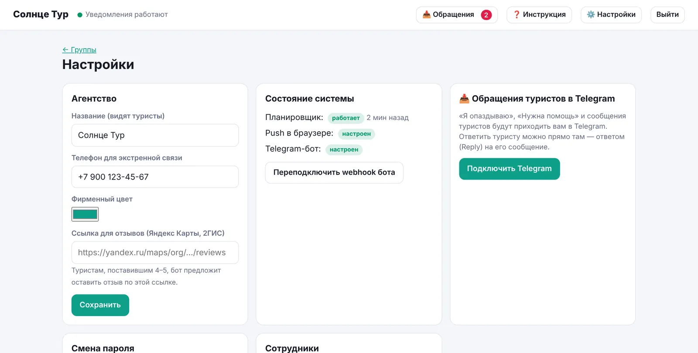
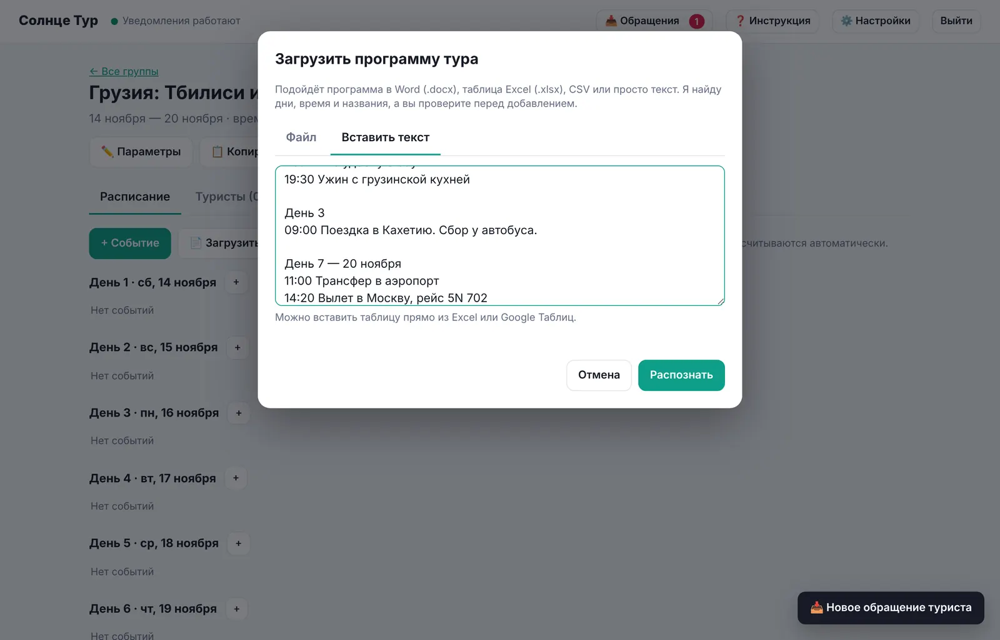
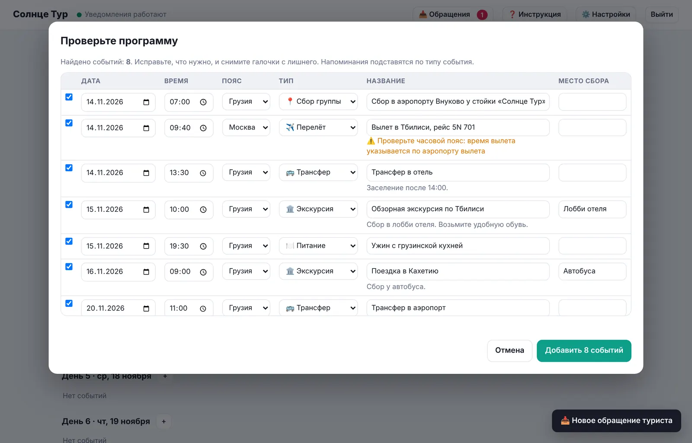
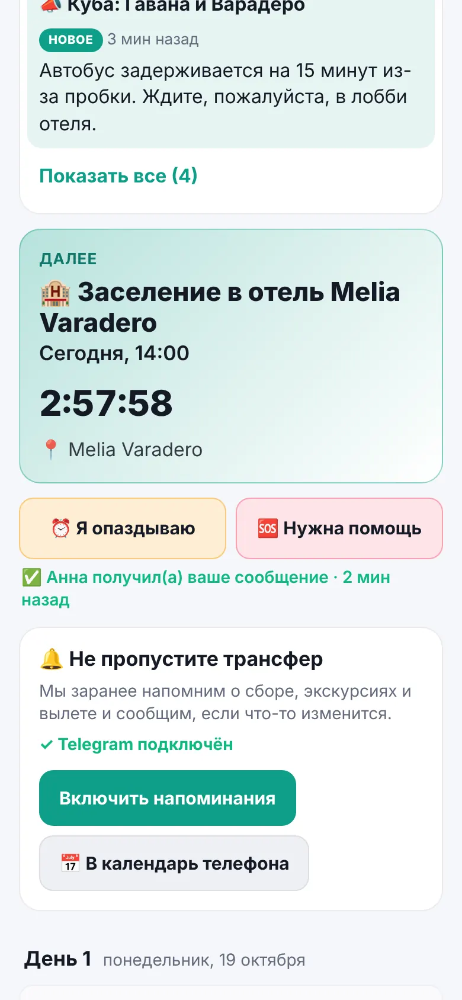
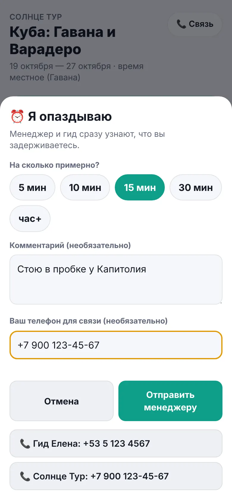
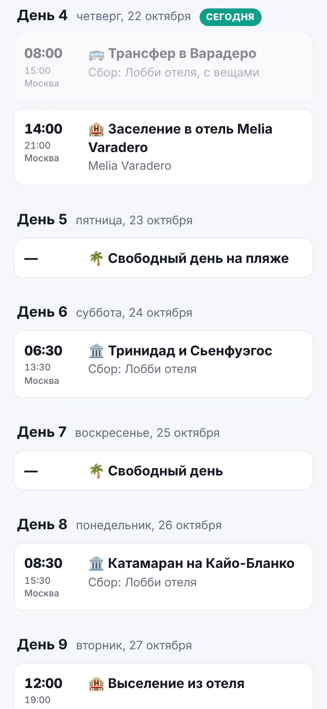
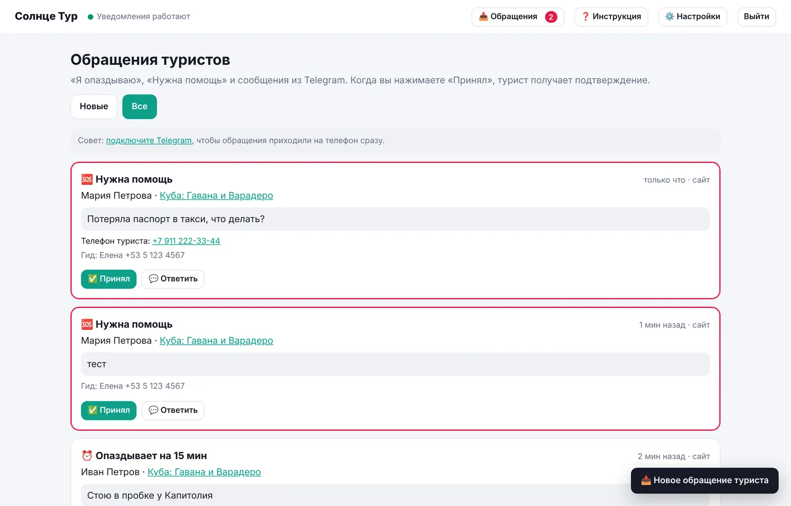

Инструкция для турфирмы
Как вести туры, загружать программы, отвечать туристам и собирать отзывы.
Как это работает
- Менеджер вносит программу тура: вручную или загрузив документ.
- Каждый турист получает личную ссылку или QR-код. Без регистрации и приложений.
- Сервис сам напоминает туристам о сборе, трансферах, экскурсиях и вылетах — в браузере телефона и в Telegram.
- Если время меняется, туристы сразу получают «⚠️ Изменение».
- В поездке турист одной кнопкой сообщает «Я опаздываю» или «Нужна помощь», а менеджер сразу это видит.
- На следующий день после тура бот просит оценить поездку.
Первые шаги (один раз)

⚙️ Настройки → Агентство
- Название и фирменный цвет — их видят туристы. Телефон для экстренной связи.
- Ссылка для отзывов — страница вашей фирмы на Яндекс Картах или в 2ГИС. Туристам, поставившим 4–5, бот предложит оставить отзыв там.
📥 Обращения туристов в Telegram
- Нажмите «Подключить Telegram» → «Открыть бота» → в боте нажмите Start.
- Готово: «Я опаздываю», «Нужна помощь» и сообщения туристов будут приходить вам в Telegram.
Подключиться может каждый сотрудник, со своего телефона.
👥 Сотрудники
Добавьте менеджеров — у каждого будет свой вход в офис.
Новый тур
Группы → + Новая группа. Укажите:
- название и даты;
- часовой пояс места отдыха;
- откуда туристы (домашнее время);
- гида и его телефон;
- памятку.
Галочка «Попросить оценку поездки» включена по умолчанию.
Программу можно загрузить из документа или внести вручную кнопкой + Событие: тип, название, дата, местное время, часовой пояс, место сбора, что взять с собой, за сколько напомнить.
📄 Загрузка программы из документа
Расписание → 📄 Загрузить программу.
- Файл: программа в Word (.docx), таблица Excel (.xlsx), CSV или .txt.
- Вставить текст: скопируйте программу из документа, письма или Google Таблицы и вставьте.

Чтобы программа распознавалась без правок, пишите её так:
День 1. 12 мая 06:30 Сбор в аэропорту Шереметьево у стойки «Солнце Тур» 09:15 Вылет в Стамбул, рейс SU 2136 14:30–15:30 Трансфер в отель Заселение после 15:00. День 2 09:00–13:00 Обзорная экскурсия. Сбор в лобби отеля. Возьмите удобную обувь.
- Дни: «День 1», «День 2» или дата («12 мая», «12.05»).
- События: строки, которые начинаются со времени — «09:00», «9.00», «10:00–13:00».
- Строки без времени под событием попадают в его описание.
- Тип определяется по словам: вылет, трансфер, экскурсия, ужин, заселение, свободный день, сбор.
- Место сбора находится по фразам «Сбор в лобби отеля», «Сбор у автобуса».
- В Excel ищутся столбцы «Дата», «Время», «Событие», «Место сбора», «Примечание». Если дата стоит только в первой строке дня, она переносится на строки ниже.

Нажмите «Добавить N событий». Напоминания подставятся сами по типу события.
Старые форматы .doc и .xls не поддерживаются. Сохраните файл как .docx или .xlsx («Файл → Сохранить как»).
Туристы
Туристы → вставьте список имён (можно прямо из Excel) или «Добавить без имён». У каждого туриста есть:
- Ссылка / QR — отправьте в WhatsApp или Telegram, либо «Распечатать памятки с QR-кодами».
- Код вида ABCD-1234 — по нему расписание открывается на сайте в разделе /app.
- Статус уведомлений: «браузер», «Telegram» или «не подключены». Тем, у кого «не подключены», помогите при встрече группы.
- ⋯ — переименовать, написать личное сообщение, выдать новую ссылку, отключить доступ.
Совет: в первый день тура попросите туристов нажать «Получать в Telegram». Это самый надёжный канал, особенно для iPhone. Плюс только через Telegram работают отзывы и ответы прямо в чат.
Во время тура
- Изменили время или место — откройте событие, исправьте и сохраните. Галочка «Сообщить туристам об изменении» включена; снимите её, если исправляете опечатку.
- Отменить событие — туристы получат «❌ Отменено». «Удалить» убирает событие без уведомления.
- Сообщение группе — срочные новости всем или выбранным туристам. Оно приходит уведомлением и остаётся вверху расписания туриста в разделе «Сообщения от турфирмы».
- Личное сообщение — Туристы → ⋯ → «Личное сообщение туристу».
📥 Обращения: «Я опаздываю» и «Нужна помощь»



Как турист отправляет обращение
- На сайте: кнопки ⏰ Я опаздываю и 🆘 Нужна помощь.
- В Telegram: такие же кнопки внизу чата с ботом. Любое сообщение боту тоже передаётся менеджеру.
Как вы его получаете
- В Telegram (если подключили): кто, из какой группы, на сколько опаздывает, комментарий, телефон, ближайшее событие, телефон гида.
- В офисе: красный счётчик на кнопке «📥 Обращения», всплывающее «Новое обращение туриста», число новых в заголовке вкладки.

Что делать
- ✅ Принял — турист получит «Менеджер получил ваше сообщение». Кнопка есть и в Telegram, и в офисе.
- Ответить — в офисе «💬 Ответить» или в Telegram ответом (Reply) на сообщение бота. Ответ придёт туристу уведомлением, в Telegram и в «Сообщения от турфирмы».
Обращения не заменяют звонок в экстренной ситуации. В окне обращения туристу всегда показаны телефоны гида и турфирмы.
⭐ Отзывы после тура
- На следующий день после окончания тура в 12:00 по домашнему времени бот пишет туристам: «Как вам поездка? Оцените от 1 до 5».
- 4–5 → «Спасибо!» и кнопка «✍️ Оставить отзыв» на вашу страницу отзывов.
- 1–3 → бот просит написать, что пошло не так. Ответ сохраняется и сразу приходит менеджеру как обращение «⭐ Отзыв».
- Результаты — во вкладке группы «Отзывы»: средняя оценка, сколько ответили, комментарии.
- Выключить для группы: «Параметры» → снять галочку «Попросить оценку поездки».
Отзывы работают для туристов, подключивших Telegram.
Что сказать туристу
Частые вопросы
Турист говорит, что напоминания не приходят
Туристы → посмотрите статус. Если «не подключены», попросите открыть ссылку и нажать «Получать в Telegram». На iPhone уведомления браузера работают только после «Поделиться → На экран „Домой“».
Можно загрузить программу ещё раз?
Да, события добавятся к существующим. Чтобы заменить программу, сначала удалите старые события.
Где видно, что сообщение дошло?
Вкладка группы «Журнал уведомлений» → «доставлено N».
Ссылка туриста попала к посторонним
Туристы → ⋯ → «Выдать новую ссылку». Старая перестанет работать.